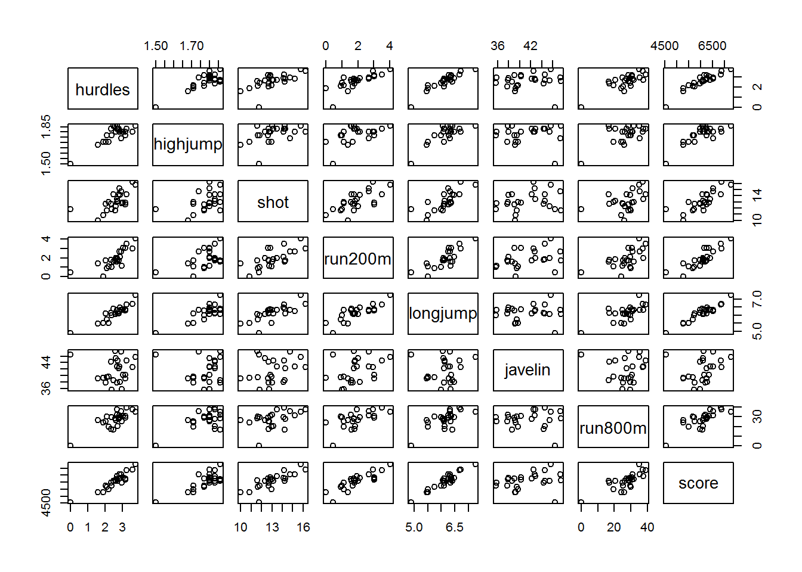
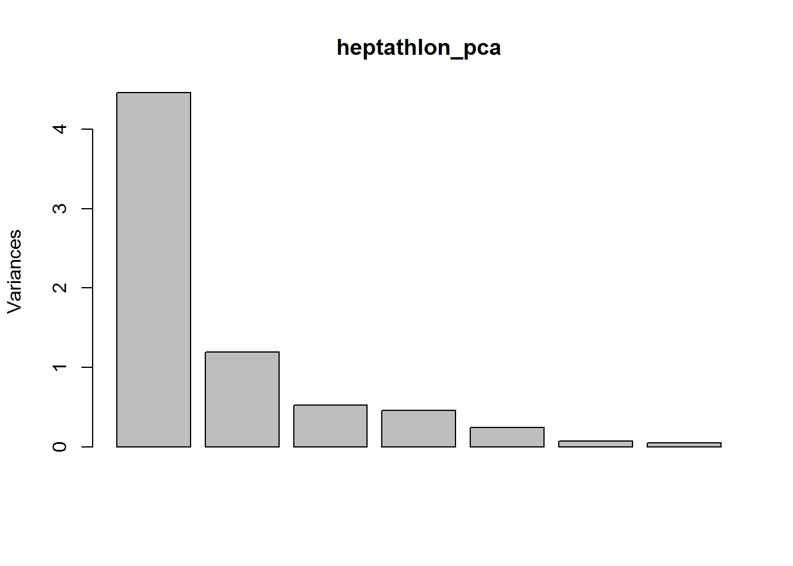
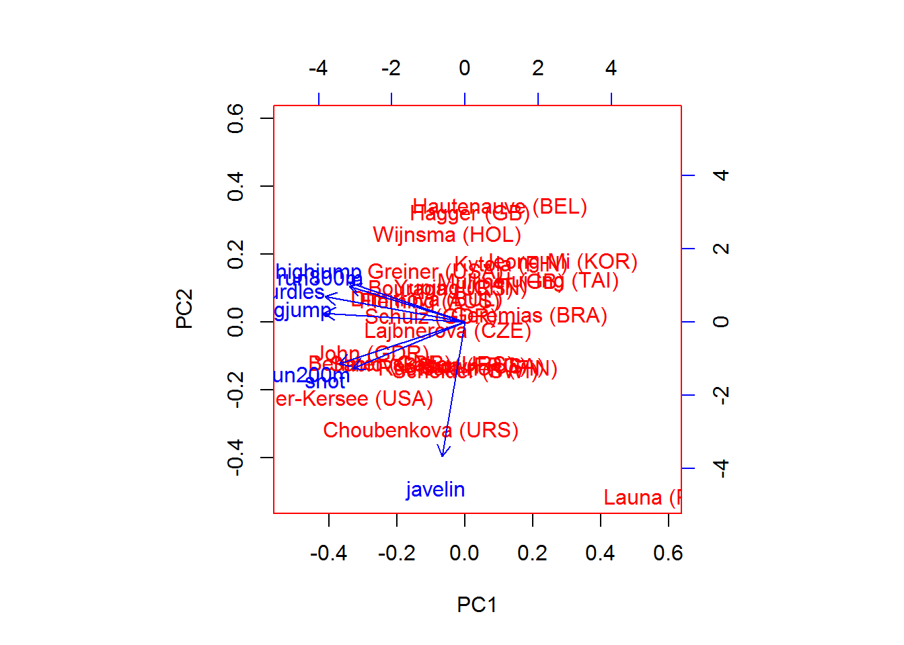
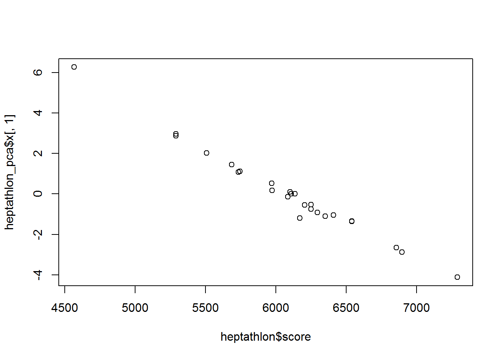

A very nice tutorial on principal component analysis can be found on youtube.
The following code is based on the book A Handbook of Statistical Analysis
#install.packages("HSAUR")
library(HSAUR)## Loading required package: toolslibrary(dplyr)##
## Attaching package: 'dplyr'## The following objects are masked from 'package:stats':
##
## filter, lag## The following objects are masked from 'package:base':
##
## intersect, setdiff, setequal, unionlibrary(knitr)
data("heptathlon", package = "HSAUR")
head(heptathlon) %>% kable()| hurdles | highjump | shot | run200m | longjump | javelin | run800m | score | |
|---|---|---|---|---|---|---|---|---|
| Joyner-Kersee (USA) | 12.69 | 1.86 | 15.80 | 22.56 | 7.27 | 45.66 | 128.51 | 7291 |
| John (GDR) | 12.85 | 1.80 | 16.23 | 23.65 | 6.71 | 42.56 | 126.12 | 6897 |
| Behmer (GDR) | 13.20 | 1.83 | 14.20 | 23.10 | 6.68 | 44.54 | 124.20 | 6858 |
| Sablovskaite (URS) | 13.61 | 1.80 | 15.23 | 23.92 | 6.25 | 42.78 | 132.24 | 6540 |
| Choubenkova (URS) | 13.51 | 1.74 | 14.76 | 23.93 | 6.32 | 47.46 | 127.90 | 6540 |
| Schulz (GDR) | 13.75 | 1.83 | 13.50 | 24.65 | 6.33 | 42.82 | 125.79 | 6411 |
heptathlon$hurdles <- max(heptathlon$hurdles) - heptathlon$hurdles
heptathlon$run200m <- max(heptathlon$run200m) - heptathlon$run200m
heptathlon$run800m <- max(heptathlon$run800m) - heptathlon$run800m
plot(heptathlon)
Now look at correlations
round(cor(heptathlon), 2)## hurdles highjump shot run200m longjump javelin run800m score
## hurdles 1.00 0.81 0.65 0.77 0.91 0.01 0.78 0.92
## highjump 0.81 1.00 0.44 0.49 0.78 0.00 0.59 0.77
## shot 0.65 0.44 1.00 0.68 0.74 0.27 0.42 0.80
## run200m 0.77 0.49 0.68 1.00 0.82 0.33 0.62 0.86
## longjump 0.91 0.78 0.74 0.82 1.00 0.07 0.70 0.95
## javelin 0.01 0.00 0.27 0.33 0.07 1.00 -0.02 0.25
## run800m 0.78 0.59 0.42 0.62 0.70 -0.02 1.00 0.77
## score 0.92 0.77 0.80 0.86 0.95 0.25 0.77 1.00heptathlon_pca <- prcomp(subset(heptathlon, select = -c(score)), scale = TRUE)
heptathlon_pca## Standard deviations:
## [1] 2.1119364 1.0928497 0.7218131 0.6761411 0.4952441 0.2701029 0.2213617
##
## Rotation:
## PC1 PC2 PC3 PC4 PC5
## hurdles -0.4528710 0.15792058 -0.04514996 0.02653873 -0.09494792
## highjump -0.3771992 0.24807386 -0.36777902 0.67999172 0.01879888
## shot -0.3630725 -0.28940743 0.67618919 0.12431725 0.51165201
## run200m -0.4078950 -0.26038545 0.08359211 -0.36106580 -0.64983404
## longjump -0.4562318 0.05587394 0.13931653 0.11129249 -0.18429810
## javelin -0.0754090 -0.84169212 -0.47156016 0.12079924 0.13510669
## run800m -0.3749594 0.22448984 -0.39585671 -0.60341130 0.50432116
## PC6 PC7
## hurdles -0.78334101 0.38024707
## highjump 0.09939981 -0.43393114
## shot -0.05085983 -0.21762491
## run200m 0.02495639 -0.45338483
## longjump 0.59020972 0.61206388
## javelin -0.02724076 0.17294667
## run800m 0.15555520 -0.09830963look at score
score <- which(colnames(heptathlon) == "score")
score## [1] 8View summary
summary(heptathlon_pca) ## Importance of components:
## PC1 PC2 PC3 PC4 PC5 PC6
## Standard deviation 2.1119 1.0928 0.72181 0.67614 0.49524 0.27010
## Proportion of Variance 0.6372 0.1706 0.07443 0.06531 0.03504 0.01042
## Cumulative Proportion 0.6372 0.8078 0.88223 0.94754 0.98258 0.99300
## PC7
## Standard deviation 0.2214
## Proportion of Variance 0.0070
## Cumulative Proportion 1.0000Linear combination for the first principal component is
a1 <- heptathlon_pca$rotation[, 1]
a1## hurdles highjump shot run200m longjump javelin
## -0.4528710 -0.3771992 -0.3630725 -0.4078950 -0.4562318 -0.0754090
## run800m
## -0.3749594center <- heptathlon_pca$center
center## hurdles highjump shot run200m longjump javelin run800m
## 2.5800 1.7820 13.1176 1.9608 6.1524 41.4824 27.3760scale <- heptathlon_pca$scale
scale## hurdles highjump shot run200m longjump javelin
## 0.73664781 0.07794229 1.49188438 0.96955712 0.47421233 3.54565612
## run800m
## 8.29108809Now apply scale funciton to the data and multiply with the loading matrix in
order to compute the first principal component score for each competitor:
hm <- as.matrix(subset(heptathlon, select = -c(score)))
drop(scale(hm, center = center, scale = scale) %*% heptathlon_pca$rotation[,1])## Joyner-Kersee (USA) John (GDR) Behmer (GDR)
## -4.121447626 -2.882185935 -2.649633766
## Sablovskaite (URS) Choubenkova (URS) Schulz (GDR)
## -1.343351210 -1.359025696 -1.043847471
## Fleming (AUS) Greiner (USA) Lajbnerova (CZE)
## -1.100385639 -0.923173639 -0.530250689
## Bouraga (URS) Wijnsma (HOL) Dimitrova (BUL)
## -0.759819024 -0.556268302 -1.186453832
## Scheider (SWI) Braun (FRG) Ruotsalainen (FIN)
## 0.015461226 0.003774223 0.090747709
## Yuping (CHN) Hagger (GB) Brown (USA)
## -0.137225440 0.171128651 0.519252646
## Mulliner (GB) Hautenauve (BEL) Kytola (FIN)
## 1.125481833 1.085697646 1.447055499
## Geremias (BRA) Hui-Ing (TAI) Jeong-Mi (KOR)
## 2.014029620 2.880298635 2.970118607
## Launa (PNG)
## 6.270021972Predict
predict(heptathlon_pca)[,1]## Joyner-Kersee (USA) John (GDR) Behmer (GDR)
## -4.121447626 -2.882185935 -2.649633766
## Sablovskaite (URS) Choubenkova (URS) Schulz (GDR)
## -1.343351210 -1.359025696 -1.043847471
## Fleming (AUS) Greiner (USA) Lajbnerova (CZE)
## -1.100385639 -0.923173639 -0.530250689
## Bouraga (URS) Wijnsma (HOL) Dimitrova (BUL)
## -0.759819024 -0.556268302 -1.186453832
## Scheider (SWI) Braun (FRG) Ruotsalainen (FIN)
## 0.015461226 0.003774223 0.090747709
## Yuping (CHN) Hagger (GB) Brown (USA)
## -0.137225440 0.171128651 0.519252646
## Mulliner (GB) Hautenauve (BEL) Kytola (FIN)
## 1.125481833 1.085697646 1.447055499
## Geremias (BRA) Hui-Ing (TAI) Jeong-Mi (KOR)
## 2.014029620 2.880298635 2.970118607
## Launa (PNG)
## 6.270021972Plot the graph
plot(heptathlon_pca)
Look at correlation between score and x[,1]
cor(heptathlon$score, heptathlon_pca$x[,1])## [1] -0.9910978Biplot
biplot(heptathlon_pca, col = c("red", "blue"))
scatterplot of the score assigned to each athlete in 1988 and the first
principal component
plot(heptathlon$score, heptathlon_pca$x[,1])